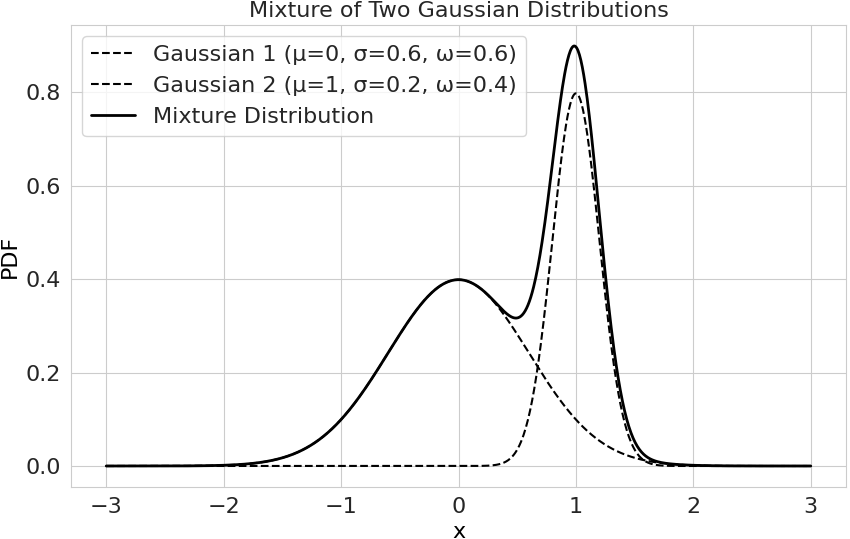

Введение¶
pysatl-mpest — это Python-библиотека, предназначенная для оценки параметров смесей вероятностных распределений.
Ключевой особенностью библиотеки является гибкая и расширяемая архитектура, позволяющая пользователям конструировать итеративные алгоритмы оценки путем комбинирования различных шагов (например, шагов максимизации, вычисления моментов и т.д.).
На данный момент система позволяет:
Описывать непрерывные распределения и их смеси, а так же работать с ними как с объектами теории вероятностей
Выполнять предобработку данных:
Оценивать количество компонент
Проводить инициализацию начального приближения путем кластеризации
Конфигурировать и запускать сложные итеративные алгоритмы оценки параметров смеси:
Комбинировать различные шаги алгоритма, например E шаг + LMoments шаг или E шаг + ВашЭкзотическийШаг
Настраивать условие остановки алгоритма
Настраивать удаление лишних компонент
Запускать “прямые” неитеративные алгоритмы оценки параметров смеси.
В дальнейшем планируется поддержка:
Дискретных и многомерных распределения
Более детальной конфигурации пайплайна алгоритма, в частности, поддержка отдельных пайплайнов для некоторых компонент. Возможность fallback’ов, в случае если алгоритм не поддерживает какую то компоненту, кидать warning и менять алгоритм на другой.
Поддержка большего числа алгоритмов.
Реализация бенчмаркинга и его внедрение в
pysatl-experiment.
Глоссарий¶
Плотность распределения¶
Вещественная функция, характеризующая сравнительную вероятность реализации тех или иных значений случайной величины, подчиняющейся некоторому конкретному закону распределения. Плотность \(f(x)\) должна удовлетворять следующим условиям:
\(f(x) \ge 0, ~ \forall x\)
\(\int_{-\infty}^{+\infty} f(x)dx = 1\)
Пусть случайная величина \(X\) имеет плотность \(f(x)\). Тогда вероятность попадания её значения в интервал \([a,b]\) равна:
Смесь распределений¶
Объект представляющий собой взвешенную совокупность распределений.
Плотность смеси распределений можно задать таким образом:
где:
\(F = \{f_1, \dots, f_n\}\) — множество плотностей компонент
\(\mathbb{R}^n \supset \Theta = \{\theta_1, \dots, \theta_n\}\) — множество параметров для каждой компоненты
\(\Omega = \{\omega_1, \dots, \omega_n\}\) — множество весов компонент, причем \(\sum_{i=1}^n \omega_i = 1\) и \(\forall i ~ \omega_i \ge 0\)
Смесь позволяет моделировать более сложные распределения, которые могут возникать, когда данные происходят из нескольких различных подгрупп.
Пример плотности смеси распределений с двумя нормальными компонентами:
{kind=link}

Функция правдоподобия¶
Пусть случайная величина \(X\) имеет плотность распределения \(f(x ~|~ \theta)\), где \(\theta\) \(-\) параметр распределения. Пусть так же мы имеем выборку \(x_1, \dots, x_n\) из случайной величины \(X\). Тогда функцией правдоподобия для этой выборки является функция \(\theta \mapsto f(x ~|~ \theta)\):
Технологический стек¶
Язык: Python 3.11+
Основные библиотеки:
numpy: для всех численных вычислений и работы с многомерными массивами (ndarray).scipy: для численных методов (оптимизация, решение систем уравнений, нахождение нулей функции).sklearn: для кластеризации.